기계설계산업기사 (2011-06-12 기출문제)
1과목: 기계가공법 및 안전관리
1. 연삭숫돌의 연삭조건과 입도(grain size)의 관계를 옳게 표시한 것은?
- 연하고 연성이 있는 재료의 연삭 : 고운 입도
- 다듬질 연삭 또는 공구의 연삭 : 고운 입도
- 경도가 높고 메진 일감의 연삭 : 거친 입도
- 숫돌과 일감의 접촉면이 작은 때 : 거친 입도
(정답률: 61%)

2. 어떤 도면에서 편심량을 4mm로 주어졌을 때, 실제다이얼 게이지의 눈금의 변위량은 얼마로 나타나야 하는가?
- 2mm
- 4mm
- 8mm
- 0.5mm
(정답률: 76%)
3. 밀링머신에서 커터 지름이 120mm, 한 날 당 이송이 0.1mm, 커터 날수가 4날, 회전수가 900 rpm 일때, 절삭속도는 약 몇 m/min인가?
- 33.9 m/min
- 113 m/min
- 214 m/min
- 339 m/min
(정답률: 66%)
4. 수공구에 의한 재해의 원인 중 옳지 않은 것은?
- 사용법이 올바르지 못했다.
- 사용하는 공구를 잘못 선정했다.
- 사용전의 점검, 손질이 충분했다.
- 공구의 성능을 충분히 알고 있지 못했다.
(정답률: 83%)
5. 공작기계에서 절삭을 위한 세 가지 기본운동에 속하지 않는 것은?
- 절삭운동
- 이송운동
- 회전운동
- 위치조정운동
(정답률: 64%)
6. 다음 중 KS 0161에 규정된 표면거칠기 표시 방법이 아닌 것은?
- 최대 높이(Ry)
- 10점 평균 거칠기(Rz)
- 산술 평균 거칠기(Ra)
- 제곱 평균 거칠기(Rrms)
(정답률: 80%)
7. 녹색 탄화규소 연삭 숫돌을 표시하는 것은?
- A 숫돌
- GC 숫돌
- WA 숫돌
- F 숫돌
(정답률: 75%)
8. 주요 공작기계의 일반적인 일감 운동에 대한 설명으로 틀린 것은?
- 밀링머신 : 일감을 고정하고 이송한다.
- 선반 : 일감을 고정하고 회전시킨다.
- 보링머신 : 일감을 고정하고 이송한다.
- 드릴링머신 : 일감을 고정하고 회전시킨다.
(정답률: 72%)
9. 각도 가공, 드릴의 홈 가공, 기어의 치형 가공, 나선 가공을 할 수 있는 공작기계는 어느 것인가?
- 선반(Lathe)
- 보링 머신(Boring Machine)
- 브로칭 머신(Broaching Machine)
- 밀링 머신(Milling Machine)
(정답률: 47%)
10. 고속회전 및 정밀한 이송기구를 갖추고 있으며, 정밀도가 높고 표면거칠기가 우수한 실린더, 커넥팅 로드, 베어링면 등의 가공에 가장 적합한 보링 머신은?
- 수직 보링 머신
- 정밀 보링 머신
- 보통 보링 머신
- 코어 보링 머신
(정답률: 82%)
11. 창성법에 의한 기어 절삭에 사용하는 공구가 아닌 것은?
- 래크 커터
- 호브
- 피니언 커터
- 브로치.
(정답률: 76%)
12. 테이블이 수평면 내에서 회전하는 것으로, 공구의 길이방향 이송이 수직으로 되어 있고 대형 중량물을 깎는데 쓰이는 선반은?
- 수직선반
- 크랭크축선반
- 공구선반
- 모방선반
(정답률: 77%)
13. 외부 컴퓨터에서 작성한 NC 프로그램을 CNC 공작기계에 송 · 수신하면서 가공하는 방식은?
- NC
- CNC
- DNC
- FMS
(정답률: 65%)
14. 선반에 의한 절삭가공에서 이송(feed)과 가장 관계가 없는 것은?
- 단위는 회전당 이송(mm/rev)으로 나타낸다.
- 일감의 매 회전마다 바이트가 이동되는 거리를 의미한다.
- 이론적으로는 이송이 작을수록 표면 거칠기가 좋아진다.
- 바이트로 일감 표면으로부터 절삭해 들어가는 깊이를 말한다.
(정답률: 67%)
15. 기계의 안전장치에 속하지 않는 것은?
- 리미트 스위치(limit switch)
- 방책(防柵)
- 초음파 센서
- 헬멧(helmet)
(정답률: 81%)
16. 밀링머신에서 주축의 회전운동을 직선 왕복운동으로 변화시키고 바이트를 사용하는 부속장치는?
- 수직 밀링 장치
- 슬로팅 장치
- 래크절삭 장치
- 회전 테이블 장치
(정답률: 66%)
17. 평면연삭기에서 연삭숫돌의 원주 속도 v=2500m/min 이고, 연삭저항 F=150N이며 연삭기에 공급된 연삭동력이 10kW일 때 이 연삭기의 효율은 약 얼마인가?
- 53%
- 63%
- 73%
- 83%
(정답률: 45%)
18. 직경(외경)을 측정하기에 부적합한 공구는?
- 철자
- 그루브 마이크로미터
- 버니어 캘리퍼스
- 지시 마이크로미터
(정답률: 67%)
19. 재질이 W, Cr, V, Co등을 주성분으로 하는 바이트는?
- 합금공구강 바이트
- 고속도강 바이트
- 초경합금 바이트
- 세라믹 바이트
(정답률: 72%)
20. 호닝가공의 특징이 아닌 것은?
- 발열이 크고 경제적인 정밀가공이 가능하다.
- 전 가공에서 발생한 진직도, 진원도, 테이퍼 등을 수정할 수 있다.
- 표면거칠기를 좋게 할 수 있다.
- 정밀한 치수로 가공할 수 있다.
(정답률: 50%)
2과목: 기계제도
21. 가공으로 생긴 커터의 줄무늬 방향이 기호를 기입한 그림의 투영면에 비스듬하게 2방향으로 교차하는 것을 의미하는 기호는?
- ㅗ
- ×
- C
- =
(정답률: 87%)
22. 다음 기하공차 기호 중에서 원통도를 표시한 것은?
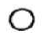
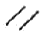
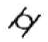
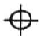
(정답률: 82%)
23. 도면에 나사의 표시가 M 10 - 2/1 로 되어 있을 때 다음 설명 중 올바른 것은?
- M : 관용 나사
- 1 : 수나사의 피치
- 2 : 수나사 등급
- 10 : 호칭 지름
(정답률: 76%)
24. 그림과 같은 철골 구조물 도면에서 치수 기입이 잘못된 것은?
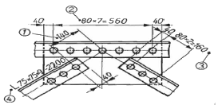
- ①
- ②
- ③
- ④
(정답률: 60%)
25. 다음 입체도의 화살표 방향 투상도인 정면도로 가장 적합한 투상도는?
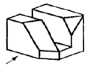
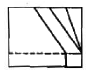
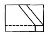
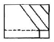
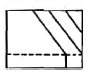
(정답률: 71%)
26. 그림과 같이 경사지게 잘린 사각뿔의 전개도로 가장 접합한 형상은?
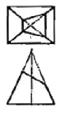
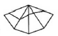
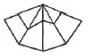
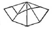
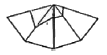
(정답률: 62%)
27. 축과 구멍의 끼워 맞춤에서 H7/g6 는 다음에서 무엇을 뜻하는가?
- 축 기준식 억지 끼워맞춤
- 축 기준식 헐거운 끼워맞춤
- 구멍 기준식 억지 끼워맞춤
- 구멍 기준식 헐거운 끼워맞춤
(정답률: 69%)
28. 다음 원추도면의 전개도에서 길이 L의 값과 각도 α 값은 대략 얼마인가?
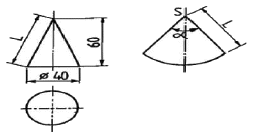
- L = 63mm, α = 114°
- L = 71mm, α = 114°
- L = 71mm, α = 118°
- L = 63mm, α = 118°
(정답률: 42%)
29. 일반 구조용 압연강재의 KS 기호인 것은?
- SS490
- SM90
- SW490
- SP490
(정답률: 81%)
30. 투상도를 그릴 때 선이 서로 겹칠 경우 우선순위로 옳은 것은?
- ① 중심선, ② 숨은선, ③ 외형선
- ① 외형선, ② 숨은선, ③ 중심선
- ① 중심선, ② 외형선, ③ 숨은선
- ① 외형선, ② 중심선, ③ 숨은선
(정답률: 84%)
31. 그림과 같은 입체도에서 화살표 방향이 정면일 때 평면도로 가장 적합한 것은?
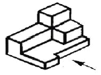
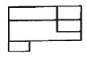
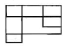
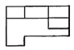
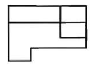
(정답률: 83%)
32. 기어 제도에서 선의 사용법으로 틀린 것은?
- 피치원은 가는 1점 쇄선으로 표시한다.
- 축에 직각인 방향에서 본 그림을 단면도로 도시할 때는 이골(이뿌리)의 선은 굵은 실선으로 표시한다.
- 잇봉우리원(이끝원)은 가는 실선으로 표시한다.
- 내접 헬리컬 기어의 잇줄 방향은 3개의 가는 실선으로 표시한다.
(정답률: 62%)
33. 그림과 같은 KS 용접기호의 의미는?
- 전체둘레 용접 표시이다.
- 현장용접 표시이다.
- 전체둘레 현장용접 표시이다.
- 용접 시작점 표시이다.
(정답률: 86%)
34. 베어링 기호 "608 C2P6" 에서 각 기호의 뜻을 설명한 것으로 틀린 것은?
- 60 - 베어링 계열 기호
- 8 - 안지름 번호
- C2 - 궤도륜 모양 기호
- P6 - 정밀도 등급 기호
(정답률: 75%)
35. 그림과 같은 도면에서 치수 기입이 잘못된 곳이 1개소일 경우 해당 치수는?
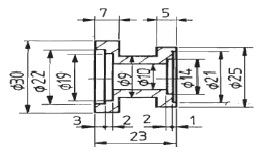
- 7
- φ9
- φ21
- φ30
(정답률: 86%)
36. 그림과 같은 3각법으로 정투상한 정면도와 평면도에 대한 우측면도로 가장 적합한 것은?
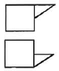
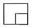
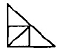
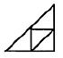
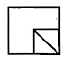
(정답률: 64%)
37. 축의 치수
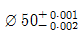
구멍의 치수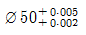
일 때 최대틈새는 얼마인가?- 0.003
- 0.0⑤
- 0.007
- 0.009
(정답률: 78%)
38. 기하공차 중 단독 형체에 관한 것들로만 짝지어진 것은?
- 진직도, 평면도, 경사도
- 진직도, 동축도, 대칭도
- 진직도, 평면도, 원통도
- 진직도, 동축도, 경사도
(정답률: 68%)
39. KS 나사에서 ISO 표준에 있는 관용 테이퍼 암나사에 해당하는 것은?
- R 3/4
- Rc 3/4
- PT 3/4
- Rp 3/4
(정답률: 77%)
40. 그림과 같은 면의 지시기호에서 "λc 0.8"은 무엇을 나타내는가?
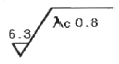
- 컷 오프값
- 최대 높이
- 평균 거칠기
- 기준 길이
(정답률: 83%)
3과목: 기계설계 및 기계재료
41. 다음 중 장신구, 무기, 불상, 종 등의 금속 제품으로 오래 전부터 사용되어 왔으며 내식성과 내마모성이 좋아 각종 기계주물용이나 미술공예품으로 사용되는 금속은?
- 철
- 청동
- 납
- 알루미늄
(정답률: 81%)
42. 다음 중 기계구조용 탄소강 SM45C의 탄소함유량으로 가장 적당한 것은?
- 0.02~2.01%
- 0.04~0.⑤%
- 0.32~0.38%
- 0.42~0.48%
(정답률: 64%)
43. 다음 금속 중 자기변태점이 없는 것은?
- Fe
- Ni
- Co
- Zn
(정답률: 51%)
44. 다음 중 친화력이 큰 성분 금속이 화학적으로 결합하여, 다른 성질을 가지는 독립된 화합물을 만드는 것은?
- 금속간 화합물
- 고용체
- 공정 합금
- 동소 변태
(정답률: 73%)
45. 열처리방법 중 풀림의 목적이 아닌 것은?
- 기계 가공선 개선
- 냉간 가공성 향상
- 잔류 응력 제거
- 재질의 경화
(정답률: 57%)
46. 다음 중 표준상태인 탄소강의 기계적 성질은 일반적으로 탄소함유량에 따라 변화한다. 가장 적합한 것은? (단, 표준상태인 탄소강은 0.86%C 이하의 아공석강이다.)
- 탄소량이 증가함에 따라 인장강도가 증가한다.
- 탄소량이 증가함에 따라 항복점이 저하한다.
- 탄소량이 증가함에 따라 연신율이 증가한다.
- 탄소량이 증가함에 따라 경도가 감소한다.
(정답률: 54%)
47. 다음 중 탄소강에 함유되어 있는 규소(Si)의 영향을 잘못 설명한 것은?
- 인장강도, 탄성한계, 경도를 상승시킨다.
- 연신율과 충격값을 증가시킨다.
- 결정립을 조대화 시키고 가공성을 해친다.
- 용접성을 저하시킨다.
(정답률: 36%)
48. 담금질된 강의 경도를 증가시키고 시효변형을 방지하기 위한 목적으로 0℃ 이하의 온도에서 처리하는 방법은?
- 저온 담금 용해처리
- 시효 담금처리
- 냉각 뜨임처리
- 심냉처리
(정답률: 78%)
49. 다음 원소 중 중금속이 아닌 것은?
- Fe
- Ni
- Mg
- Cr
(정답률: 72%)
50. 알루미늄 합금으로 피스톤 재료에 사용되는 Y-합금의 성분을 바르게 표현한 것은?
- Al-Cu-Ni-Mg
- Al-Mg-Fe
- Al-Cu-Mo-Mn
- Al-Si-Mn-Mg
(정답률: 72%)
51. 피치가 1mm인 2줄 나사에서 90˚ 회전시키려면 나사가 움직인 거리는 몇mm인가?
- 4
- 2
- 1
- 0.5
(정답률: 72%)
52. 다음 중 정숙하고 원활한 운전과 고속회전이 필요할 때 적당한 체인은?
- 사일런트 체인(silent chain)
- 코일 체인(coil chain)
- 롤러 체인(roller chain)
- 블록 체인(block chain)
(정답률: 79%)
53. 기계요소를 사용목적에 따라 분류할 때 완충(진동억제) 또는 제동용 기계요소가 아닌 것은?
- 브레이크
- 스프링
- 베어링
- 플라이휠
(정답률: 61%)
54. 외접원통 마찰차에서 원동차의 지름 200mm, 회전수 1000rpm으로 회전할 때, 2.21kW의 동력을 전달시키려면 약 N의 힘으로 밀어 붙여야 하는가? (단, 마찰계수는 0.2로 한다.)
- 1⑤5.20
- 708.86
- 2110.50
- 1417.72
(정답률: 24%)
55. 안지름 500mm, 최고사용압력 120N/cm2 의 보일러의 강판의 두께는 약 몇 mm 정도가 적당한가? (단, 강판의 인장강도 350MPa, 안전율 4.75, 리벳이음의 효율 η=0.58로 하며, 부식여유는 1mm로 한다.)
- 4.12
- 6.⑤
- 13.76
- 8.02
(정답률: 18%)
56. 브레이크 드럼축에 554.27N·m의 토크가 작용하고 있을 때, 이 축을 정지시키는 데 필요한 제동력은 약 몇 N인가? (단, 브레이크 드럼의 지름은 500mm 이다.)
- 1108.54
- 2217.08
- 252.26
- 504.52
(정답률: 39%)
57. 핀 전체가 두 갈래로 되어 있어 너트의 풀림 방지나 핀이 빠져 나오지 않게 하는데 사용되는 핀은?
- 테이퍼 핀
- 너클 핀
- 분할 핀
- 평행 핀
(정답률: 78%)
58. 940N·m의 토크를 전달하는 지름 50mm인 축에 안전하게 사용할 키의 최소 길이는 약 몇 mm인가? (단, 묻힘 키의 폭과 높이 b x h=12mm x 8mm이고, 키의 허용 전단응력은 78.4 N/mm2이다.)
- 40
- 50
- 60
- 70
(정답률: 33%)
59. 다음 중 두 축의 상대위치가 평행할 때 사용되는 기어는?
- 베벨 기어
- 나사 기어
- 웜과 웜기어
- 헬리컬 기어
(정답률: 52%)
60. 볼베어링의 수명에 대한 설명으로 맞는 것은?
- 반지름방향 동등가하중의 3배에 비례한다.
- 반지름방향 동등가하중의 3승에 비례한다.
- 반지름방향 동등가하중의 3배에 반비례한다.
- 반지름방향 동등가하중의 3승에 반비례한다.
(정답률: 55%)
4과목: 컴퓨터응용설계
61. 서로 다른 두 개의 곡면을 연결할 때 매끄럽게 연결하는 것은 무엇인가?
- 블랜딩(blending)
- 네스팅(nesting)
- 리메싱(remeshing)
- 쉐이딩(shading)
(정답률: 84%)
62. 2차원 평면공간에서 두 점 (3,2), (5,3)을 지나는 직선의 방정식의 기울기는 얼마인가?
- 1
- 1/2
- 1/3
- 1/4
(정답률: 63%)
63. 3차원 기본 형상(primitives)을 이용하여 Boolean Operation으로 3차원 모델링을 하는 기법을 무엇이라고 하는가?
- CSG(Constructive Solid Geometry)법
- B-rep(Boundary representation)법
- W-rep(Wire representation)법
- DBM(Data Base Management)법
(정답률: 69%)
64. CAD 시스템에서 입력 장치라고 할 수 없는 것은?
- 마우스
- 트랙볼
- 스캐너
- 플로터
(정답률: 77%)
65. 솔리드 모델링에서 CSG와 비교한 B-rep의 특징으로 맞는 것은?
- Data Base의 Memory를 적게 차지한다.
- 표면적 계산이 곤란하다.
- 복잡한 Topology 구조를 가지고 있다.
- Primitive 를 이용하여 직접 형상을 구성한다.
(정답률: 60%)
66. 제품의 모델(model)과 그의 관련된 데이터 교환에 관한 표준 데이터 형식이 아닌 것은?
- STEP
- IGES
- DXF
- DWG
(정답률: 69%)
67. (x + 7)2 + (y - 4)2 = 64 인 원의 중심과 반지름을 구하면?
- 중심 ( -7, 4), 반지름 8
- 중심 ( 7, 4), 반지름 8
- 중심 ( -7, 4), 반지름 64
- 중심 ( -7, -4), 반지름 64
(정답률: 73%)
68. 세 조정점
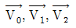
로 정의되는 2차 Bezier 곡선의 매개변수식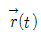
로 알맞은 것은?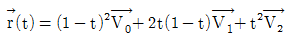
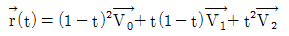
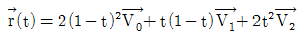
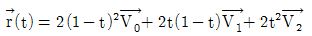
(정답률: 25%)
69. 3차원 공간에서 y축을 중심으로 θ만큼 회전했을 때의 변환행렬로 옳은 것은? (단, 변환 공식은 [X Y Z 1]=[x y z 1] [변환행렬(4 × 4)] 이다.)(오류 신고가 접수된 문제입니다. 반드시 정답과 해설을 확인하시기 바랍니다.)
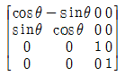
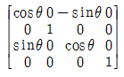
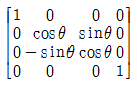
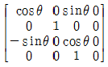
(정답률: 49%)
70. 자유곡면을 형성할 때 곡면 패치(Patch)의 4개점의 위치벡터와 4개의 경계곡선을 주어 그 경계조건을 만족하는 곡면을 생성시키는 곡면은?
- NURBS 곡면
- Coons 곡면
- Spline 곡면
- Ferguson 곡면
(정답률: 71%)
71. 다음 중 서피스 모델링 시스템으로 가장 하기 어려운 작업은?
- NC 공구 경로 계산
- 형상 내부의 중량 계산
- 임의의 단면 생성
- 옵셋면 생성
(정답률: 77%)
72. 솔리드 모델링에서 기본형상의 불 연산방법이 아닌 것은?
- 합집합
- 차집합
- 곱집합
- 교집합
(정답률: 76%)
73. 다음 CAD 그래픽 소프트웨어의 기본 기능이 아닌 것은?
- 그래픽 형상 작성 기능
- 데이터 변환 기능
- 디스플레이 제어 기능
- 수치제어 가공 기능
(정답률: 60%)
74. 그래픽 디스플레이에서 리프레시(REFRESH)의 빈도를 증가시켜도 약간의 화면이 흐려지고 밝아지는 현상이 일어날 때 화면이 흔들리는 현상을 무엇이라 하는가?
- FLICKER
- MATRIX
- CATHODE
- FOCUSING
(정답률: 76%)
75. LAN 시스템의 주요 특징으로 가장 거리가 먼 것은?
- 자료의 전송속도가 빠르다.
- 통신망의 결합이 용이하다.
- 신규장비를 전송매체로 첨가하기가 용이하다.
- 장거리 구역에서의 정보통신에 용이하다.
(정답률: 73%)
76. 와이어프레임 모델의 특징을 잘못 설명한 것은?
- 데이터의 구성이 간단하다.
- 처리속도가 빠르다.
- 물리적 성질의 계산이 불가능하다.
- 은선 제거가 가능하다.
(정답률: 76%)
77. 다음은 어느 디스플레이 장치에 대한 설명인가?
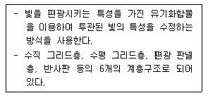
- CRT 디스플레이
- 액정 디스플레이
- 플라즈마 디스플레이
- 래스터 스캔 디스플레이
(정답률: 55%)
78. CAD시스템에서 두 개의 곡선을 연결하여 복잡한 형태의 곡선을 만들 때, 양쪽곡선의 연결점에서 2차 미분까지 연속하게 구속조건을 줄 수 있는 최소 차수의 곡선은?
- 2차 곡선
- 3차 곡선
- 4차 곡선
- 5차 곡선
(정답률: 74%)
79. 폐쇄된 평면 영역이 단면이 되어 직진이동 혹은 회전이동 시켜 솔리드 모델을 만드는 모델링 기법은?
- 스키닝(skinning)
- 리프팅(rifting)
- 스위핑(sweeping)
- 트위킹(tweaking)
(정답률: 58%)
80. CAD/CAM시스템에서 컵이나 병 등의 형상을 만들때 회전곡면(revolution surface)을 이용한다. 회전곡면을 만들때 반드시 필요한 자료로 거리가 먼 것은?
- 회전 각도
- 중심축
- 단면 곡선
- 옵셋(offset)량
(정답률: 67%)